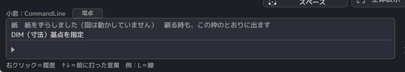
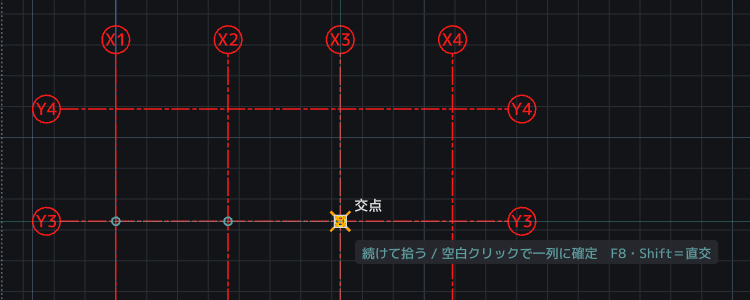
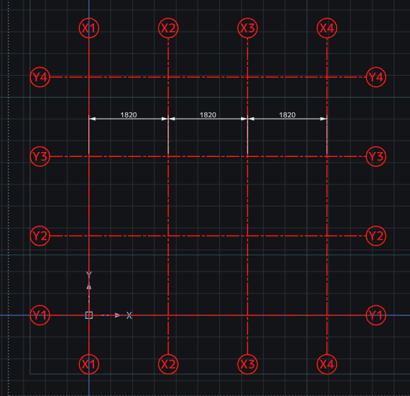

日本語 English
9. 寸法の手順
D / DIM（寸法の列）DAL（平行寸法）DDI（直径）／DRA（半径）DAR（弧長）DI / DIST（計測）＝図面に残さずに測るAREA（面積）＝囲いの内側を、一回クリック測った答えを、メモや図面へ寸法の身なり（スタイル）寸法の字が、物に対して大きく見える時字高（文字の大きさを直す）大きさの意味（紙のmm／図面の単位）
いまは、この用事だけを出しています。 この章をぜんぶ見る
D / DIM（寸法の列）
- ①小窓に D →Enter（DIM・DLI でも同じ）。

① - ②測りたい点を、スナップで順に拾っていきます。

② - ③空白をクリック＝拾った点が一列の寸法になります（引き出した方向で、水平か垂直かが決まります）。

③
右クリック＝拾いかけを捨てる。
DAL（平行寸法）
- ①小窓に DAL →Enter。
- ②1点目・2点目をスナップで（2点の向きに平行な寸法＝斜めの本当の距離を測ります）。
- ③置き場所へ引き出してクリック。
DDI（直径）／DRA（半径）
- ①小窓に DDI（直径）か DRA（半径）→Enter。
- ②円か円弧をクリック。
- ③向きを決めて、置き場所でクリック。
DAR（弧長）
- ①小窓に DAR →Enter（道具棚の「弧長」でも同じ）。
- ②円弧をクリック。
- ③置き場所でクリック（弧の外でも内でも）。
値には ⌒ が付きます＝曲げ加工の「伸ばした長さ」が計算いらずで出ます（半径×角度×π÷180は蔵人の仕事）。
DI / DIST（計測）＝図面に残さずに測る
- ①リボン「計測」か、小窓に DI →Enter。
- ②1点目をクリック（スナップが効きます）。
- ③2点目へカーソルを動かすと、クリックする前から距離・角度・横・縦がその場に出続けます。
- ④クリックで確定＝小窓の履歴に一行残ります。そのまま続けて次の二点を測れます（Escでやめる）。
- 図面には線も寸法も一本も残りません。「ちょっと測りたいだけ」のために寸法を打つと、読んで、消す、の二手が余分に要り、消し忘れれば相手に渡す図面に下調べの跡が乗ります。
- 直交（F8）は、この道具では効きません＝斜めの本当の距離が測れるように（拘束は「決める」道具のもの）。
AREA（面積）＝囲いの内側を、一回クリック
- ①計測に入ると、下に帯が出ます。［面積を測る］を押す（小窓に AREA →Enter でも、Tab でも切り替わります）。
- ②測りたい部屋の内側を、一回クリック。囲いがピンクで光り、面積と周長がその場に出ます。
- 島（穴）は引きます。中に浮かんでいる形があれば、その分を引いて「島n か所を引きました」と名乗ります。
- 閉じた図形（四角・円・ポリゴン…）を先に選んでから計測に入っても測れます（複数選んでも構いません）。※円をひとつ選んだ時だけは、πr² で厳密に出します。
- 弧を含む囲い（円・角丸）は、弧を細かい折れ線に開いて測るので、答えはほんの少しだけ小さく出ます（半径1000で 0.007%、半径100で 0.07% ほど）。小さい形ほど、この差は大きくなります。
- 囲まれていない所を押すと、その理由を言います（線に隙間があるか、閉じていません）。
測った答えを、メモや図面へ
帯の右に二つ並んでいます（測る前は薄く「測ると押せます」）。
- ①［図面に書き込む］…押して、置く場所をクリック。いまの字高・現在画層で文字が一つ置かれます。※この一打だけが図面を変えます（U ひと押しで消せます）。
- ②［コピー］…パソコンのクリップボードへ。メモ帳や表計算にそのまま貼れます。
- 押さなければ何も起きません＝「書かない」が既定です。距離でも面積でも、直前に測った答えが渡ります。
寸法の身なり（スタイル）
- 寸法スタイル＝台帳の一覧と切替。寸法スタイル 新規 詳細図＝いまの設定を写して一枚増やす。
- 文字高 3.5＝寸法の文字の高さ。矢の大きさ 2.5＝矢の寸法。
- 丸め 1＝寸法値の丸め（1066.8→1067）。桁 0＝小数の桁数（0＝整数だけ＝日本の図面の常識）。
- 丸め方式 切り上げ＝落とす端の始末。四捨五入・切り捨て・切り上げの三つ（3638.4→丸め1で 3638／3638／3639）。
- 丸め・桁・丸め方式は、画面にも印刷にも同じに効きます。ページ設定の板の「寸法スタイル」の段でも直せます。リボンの寸法の欄の「1刻み・切り捨て」を押すと開きます。
- 矢じり＝端末記号の切替。塗り矢・開き矢・斜線・黒丸・白丸・なし。斜線は建築図面の定番です。
- 狭い所を測ると、矢は外へ出ます（寸法線が矢の3倍に満たない時）。塗り矢と開き矢だけ。画面にも紙にも同じに出ます。
寸法の字が、物に対して大きく見える時
- 字と寸法は「紙で何ミリ」で置かれます（1:50 なら、紙の 3mm＝図面の 150）。小さな物を 1:50 のまま描くと、字が物と同じくらいに見えます。間違いではありません。その縮尺の紙が、そう刷れます。
- 製図台の点線の四角が、いまの用紙と縮尺の「紙」です。刷ると、紙はそこに来ます。描き足しても、紙は動きません。（紙を頼りに、余白を残して割り付けられます）図が紙の枠を超えると、超えた側の線が琥珀になり、製図台の右上の札が、どうするかを聞きます（紙をずらす／用紙を大きく／縮尺を替える／このまま描く）。紙は、答えるまで動きません。仕上がって真ん中へ寄せたい時は、印刷の板の［中央へ］。要らなければ、設定の板の「紙の枠」で消せます。
- 物を大きく刷りたい時は、小窓に 縮尺 5（＝1:5）。字と寸法は、紙での大きさのまま付いて来ます。ページ設定・印刷の板の縮尺と、同じ一つを替えています。
- 引いて見て字が読めない時は、その字に指を乗せると、そばに読める大きさで写します（図面にも紙にも書きません）。
字高（文字の大きさを直す）
文字を選んで、小窓に 字高 5 →Enter＝その大きさに。
右クリックメニューの「字高…」からも打てます。
大きさの意味（紙のmm／図面の単位）
文字を選んでプロパティ（PR）を開くと「大きさ」の行があります。
「図面の単位 175」＝置いた字は既定でこちら（縮尺を替えても動かない）。押すと
「紙で 3.5mm（図面では 175）」＝紙のmmで宣言した字に付け替えられます（数は変わりません・
意味だけ替わります）。紙の字は、縮尺を替えると紙で同じ大きさになるよう図面で育ちます。
他所の図面の字は「不明」＝大きさから推定して紙へ出します。押せば宣言できます。
この手引きの文は、K'Ad蔵人の中の教本（メニューバー「ヘルプ」の【教本】）と同じものです。
教本を直せば、この手引きも同じ日に直ります。
絵は Windows 版の画面です（2026年11月に撮り直しました）。Mac 版では、Ctrl が ⌘、Alt が ⌥ になります。
教本を直せば、この手引きも同じ日に直ります。
絵は Windows 版の画面です（2026年11月に撮り直しました）。Mac 版では、Ctrl が ⌘、Alt が ⌥ になります。